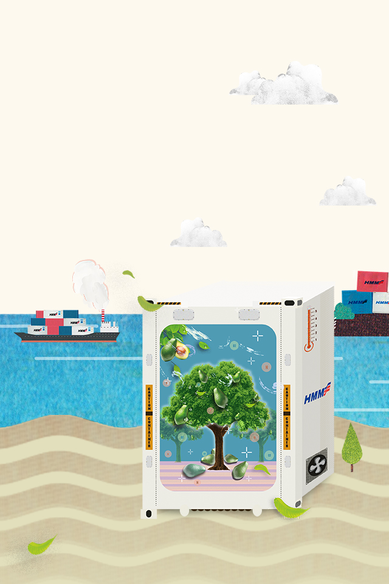
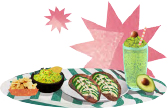

와 제 롤모델이 잡스에요!!! 아이폰 첫 출시되고 나서부터 계속 아이폰 쓰고 있는데 잡스가 너무 그리워요ㅠㅠ 지금은 돈만 벌려고 하는 것 같아서 디자인 발전도 없고ㅠㅠ와 제 롤모델이 잡스에요!!! 아이폰 첫 출시되고 나서부터 계속 아이폰 쓰고 있는데 잡스가 너무 그리워요ㅠㅠ 지금은 돈만 벌려고 하는 것 같아서 디자인 발전도 없고ㅠㅠ와 제 롤모델이 잡스에요!!! 아이폰 첫 출시되고 나서부터 계속 아이폰 쓰고 있는데 잡스가 너무 그리워요ㅠㅠ 지금은 돈만 벌려고 하는 것 같아서 디자인 발전도 없고ㅠㅠ와 제 롤모델이 잡스에요!!! 아이폰 첫 출시되고 나서부터 계속 아이폰 쓰고 있는데 잡스가 너무 그리워요ㅠㅠ 지금은 돈만 벌려고 하는 것 같아서 디자인 발전도 없고ㅠㅠ와 제 롤모델이 잡스에요!!! 아이폰 첫 출시되고 나서부터 계속 아이폰 쓰고 있는데 잡스가 너무 그리워요ㅠㅠ 지금은 돈만 벌려고 하는 것 같아서 디자인 발전도 없고ㅠㅠ
해운 이야기
아보카도는
컨테이너를 타고
컨테이너를 타고
그동안 몰랐던 화물 이야기 2탄

‘숲 속의 버터’로 불리는 아보카도가 건강 다이어트 식재료로 인기를 끌고 있다.
햄버거나 샌드위치, 샐러드에 곁들여 먹으면 더욱 좋은 아보카도는 어떤 경로로
우리의 식탁에 오를까? 이번 호에서는 몸에 좋은 슈퍼푸드로 알려지면서
세계인들의 인기를 한 몸에 받고 있는 아보카도 이야기를 소개한다.

글
유진 사원(대외협력실)
건강한 먹거리에 대한 인식 확산으로 아보카도 열풍
‘숲 속의 버터’로 불리는 아보카도는 그 효능이 알려지면서 수입 과일중 가장 빠른 속도로 수입이 증가했다. 유통업계에 따르면 국내 아보카도 수입량이 7년 새 약 13배가 늘어 소위 아보카도 열풍을 일으키고 있는 중이다. 아보카도는 열대 기후에서 자라는 영양소가 풍부한 과일 중 하나로 11종의 비타민과 14종의 미네랄, 루테인 및 섬유질 등을 함유하고 있어 세계에서 가장 영양가 높은 과일로 기네스북에 오르기도 했다. 특히 착한 지방이라 불리는 불포화지방산이 많아 다이어트·건강 식단으로 주목받고 있다. 이러한 아보카도는 국내뿐 아니라 중국에서도 지난해 수입량이 4년 만에 160배 증가하는 등 아시아 지역의 수입량이 폭발적으로 급증하고 있다.
신선한 아보카도가 소비자에게 전달되기까지
아보카도는 지역에 따라 다르지만, 수확지로부터 판매처까지 전달되는 데 보통 한 달 이상의 기간이 소요된다. 그렇기 때문에 운송 중의 저장 환경은 더욱 더 중요할 수밖에 없다. 아보카도는 수확 당시 아보카도 내의 지방성분이 몇 퍼센트냐에 따라 저장 온도를 다르게 설정해야 한다. 예를 들면 아보카도의 지방량이 약 14%인 경우, 수확 후에 일정 기간 섭씨 7.2℃ ~ 7.5℃ 정도의 저장 온도를 유지하다가, 운송 중에는 5.5℃로 내린 온도를 유지하고, 지방성분이 높아질수록 3.5℃까지 내려주는 등 온도 변화를 주어야 최상의 상태가 유지된다. 또한 아보카도는 해상운송 시 포장된 열매가 온도변화를 겪지 않도록 특별한 주의가 요구되며, 컨테이너 내부 크기에 따라서도 특별한 적재 형태가 따로 규정되어 있어 환기와 냉방이 골고루 될 수 있도록 유지시켜야 한다.
최상의 상품가치를 만드는 컨테이너 운송 기술
한 달 이상이 소요되는 해상운송 과정에서 최상의 아보카도 상태를 유지하기 위해 어떤 기술이 동원될까? 아보카도는 수확 후부터 산소(O2)를 생성하고 이산화탄소(CO2)와 물(H2O)을 배출하면서 후숙되기 시작된다. 운송 과정에서 산소를 신속하게 제거하면 후숙 과정을 늦추고 수명을 연장할 수 있게 되는데, 이러한 최적의 운송 상태를 만드는 역할을 ‘CA 컨테이너(Controlled Atmosphere Container•CA)’가 수행하고 있다. CA 컨테이너는 ‘CA(공기조절저장) 장치’가 탑재된 컨테이너로, 이는 공기 중의 산소, 이산화탄소, 질소 등의 양을 조절해 청과물의 노화를 억제하고 수확했을 때의 맛과 신선도를 유지시킨다. 특히 아보카도를 실은 CA 컨테이너는 내부의 질소(N) 농도를 90% 이상으로 높여 호흡을 억제하고, 산소와 이산화탄소 농도는 각각 5% 비율로 조절하여 장기간 신선도를 유지할 수 있게 한다.
신선 화물 수요 강세에 컨테이너 신조
급증한 신선 화물 수요에 대응하기 위한 현대상선의 발걸음도 분주해지고 있다. 현대상선은 최근 4HRF(HC Reefer Container) 규격의 리퍼 컨테이너 4,500개를 발주하는 등 고부가가치 화물 유치에 박차를 가하고 있다. 신규 발주한 리퍼 컨테이너 중 CA 컨테이너는 160개에 달한다. 아울러 현대상선은 미주서안 노선에 한정되었던 서비스를 최근 멕시코, 페루, 칠레 등을 기항하는 남미서안 노선으로 확대해 냉동·냉장 화물 시장에서 수익성을 끌어올리고 있다. 이와 더불어 향후 신규 CA 컨테이너 기기 추가 발주가 예정되어 있는 바, 현대상선은 미주서안 및 남미발 극동향 아보카도 마켓에서 전문성을 강화해나갈 예정이다.
‘한 끼’의 식사로, 때로는 ‘한 잔’의 음료로 우리의 식생활을 건강하게 만들어주는 아보카도는 컨테이너를 만나 우리의 일상 속 깊이 들어왔다. 해운의 기술과 노력의 결실로 세계인들의 입맛을 바꾼 물류가 또 어떤 변화를 일으킬지 기대를 모으고 있다.
CA 컨테이너 (Controlled Atmosphere Container)란?
영하 30℃부터 영상 30℃까지 설정 가능하며, 내부 기체 농도를 조절할 수 있는 특수 리퍼 컨테이너이다. 산소·이산화탄소 등 기체 농도를 조절해 후숙 과일을 신선하게 도착지까지 운반할 수 있다. 대표 화물로는 아보카도와 블루베리가 있다.
-
최고예요
322
-
좋아요
322
-
슬퍼요
322
-
그저그래요
322
-
화나요
322